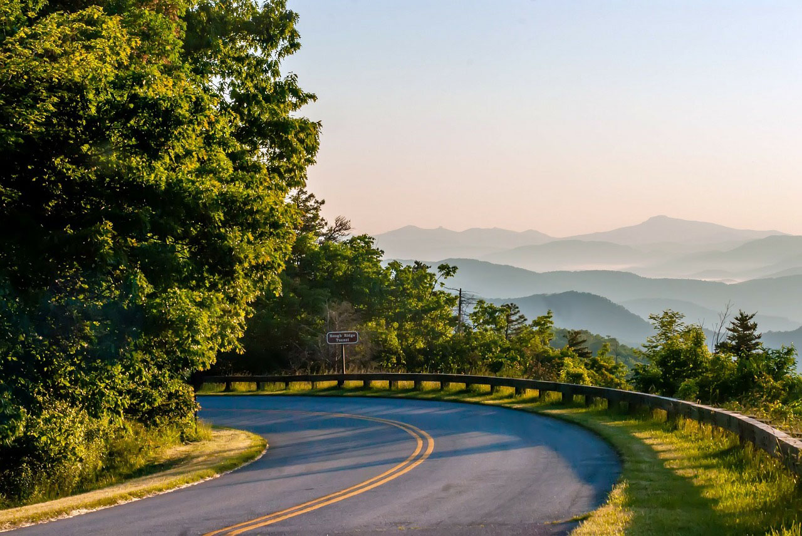
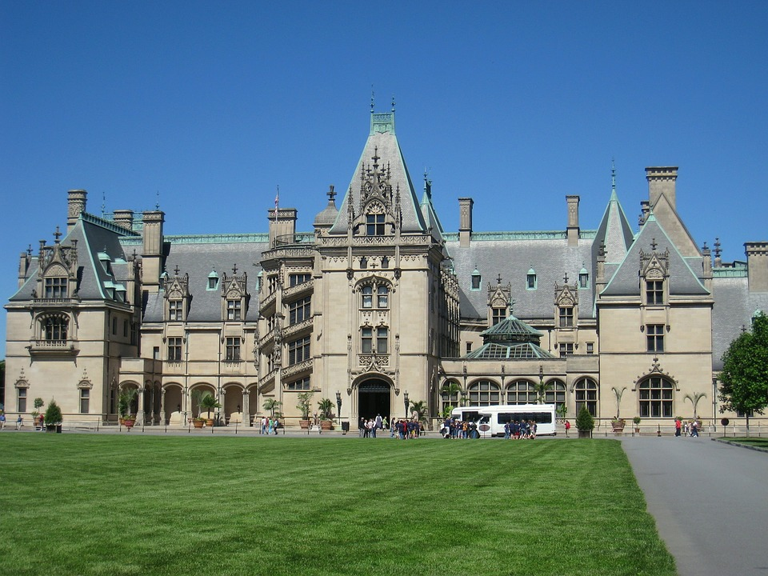
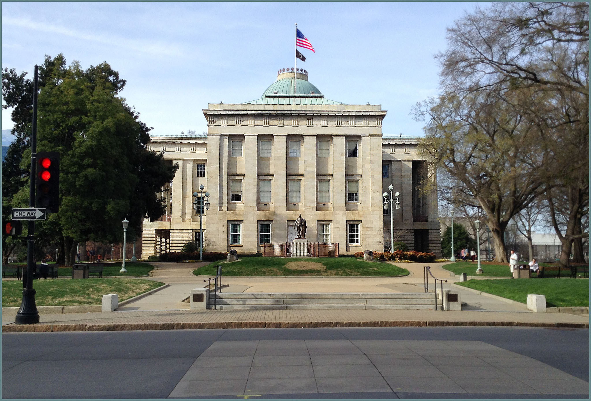
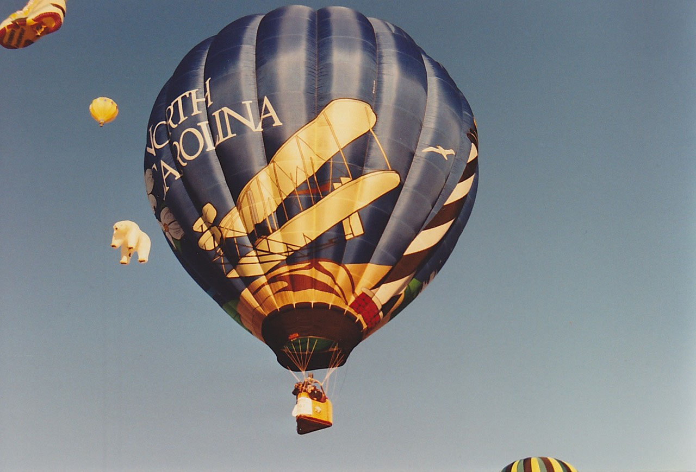
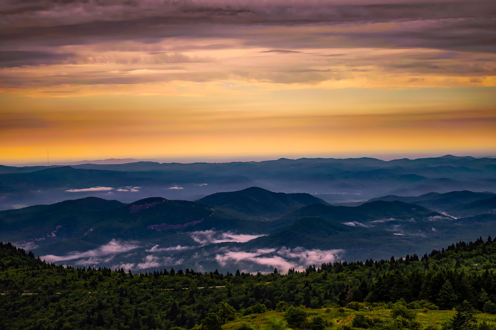

For this assignment I used to pick at least three images of North Carolina and to create an IAB film-strip size advertising. I tried to apply all my advanced skills to combine different photos to create advertising collage for Raleigh visitors. I selected gorgeous  parkway and used mountains for the background to attract visitors. Next photo I picked up is Biltmore  because it has great lawn and I needed grass for capitol building’s front yard. Third images was the center peace of my banner- Capitol building  because it is advertising for Raleigh Explorer Tour. Then, I decided to add air balloon image  to give visitors an idea, that there is another great things to do in NC, as example: balloon festival. For the whole collage, I applied photo filters such as: Hue/Saturation, contrast trying to make natural looking picture in one style, avoid different tones. Unfortunately, green grass became more radish color. The main technique I used is adding vector masks for layers, to delete unnecessary elements and combine photos in one picture. Also I used blur element to smooth merging lanes for more organic looking view. For small details, I design Welcome to North Carolina text by clipping mask of sky from this photo 